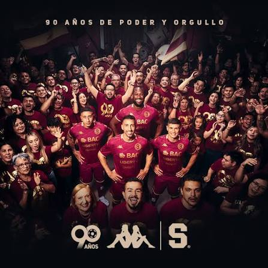

Historia de Saprissa
El Deportivo Saprissa es un club de fútbol costarricense fundado el 16 de julio de 1935 en San José, Costa Rica. Es uno de los equipos más exitosos del país y ha ganado numerosos campeonatos nacionales e internacionales.
